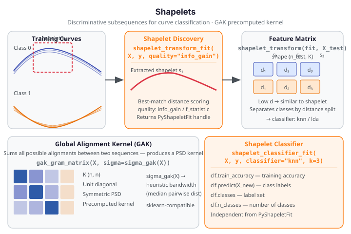

Shapelets¶
A shapelet is a short, discriminative subsequence of a time series (or functional
observation) that best separates two or more classes by minimum-distance matching.
fdars discovers shapelets from labeled data and transforms curves into a feature matrix
of best-match distances — one column per shapelet — enabling off-the-shelf classification
with full interpretability. The Global Alignment Kernel (GAK) is a related similarity
measure based on all possible alignments between two sequences; it produces a positive
semi-definite Gram matrix usable as a precomputed kernel for SVMs and other kernel methods.
| Method | fdars function |
Key output |
|---|---|---|
| Shapelet discovery (summary) | discover_shapelets |
n_shapelets, quality (dict) |
| Shapelet transform fit | shapelet_transform_fit |
PyShapeletFit handle |
| Transform new data | shapelet_transform |
(n_new, K) feature matrix |
| End-to-end classifier | shapelet_classifier_fit |
PyShapeletClassifierFit handle |
| Single shapelet distance | shapelet_distance |
(min_distance, best_offset) tuple |
| GAK kernel | gak_gram_matrix, gak_gram_train, gak_gram_predict |
Gram matrix (n, n) |

When to use¶
Shapelet features are the right choice when you need interpretable local subsequences that discriminate classes: a shapelet is a short curve segment that, by minimum-distance matching, best splits the labeled training set. After discovery, each observation is represented as a vector of \(K\) distances — one per shapelet — and a standard classifier (kNN, LDA) is fitted on this tabular feature matrix. The feature matrix is transparent: you can visualise which subsequences drive classification.
Shapelet features vs. elastic distances (GAK/DTW-style): - Choose shapelets when the discriminating pattern is a local waveform shape present in only part of each curve (e.g. a particular spike morphology), and you want to identify where in the curve the pattern occurs. - Choose GAK/DTW when global temporal alignment is more informative than local pattern matching — e.g. two-class separation driven by phase or amplitude differences across the full curve. GAK produces a Gram matrix for kernel-SVM use; shapelet features produce a tabular feature matrix for any classifier.
Shapelet features vs. FPCA features: - FPCA features (scores) capture global modes of variation and are best when class differences manifest as broad shape differences across the full domain. - Shapelet features are more powerful when class differences are localised to a short segment of the curve. Shapelet features scale better with series length than FPCA when only a small region discriminates the classes.
Quick rule: If you need to know which part of the curve separates classes, use shapelets. If you need a kernel-based similarity for an SVM, use GAK.
Search-space tradeoff
max_candidates=10000 (default) evaluates up to 10 000 candidate subsequences — good
accuracy, moderate speed. Use max_candidates=200 for quick exploration or in fence
code; use max_candidates=0 for an exhaustive search (much slower). Smaller
min_length and larger max_length both grow the candidate pool, slowing discovery.
Shapelet discovery¶
Core concept¶
Given labeled curves \(\{(x_i, y_i)\}\) with \(y_i \in \{0, 1, \ldots\}\), shapelet discovery searches all candidate subsequences of all training curves and selects those whose best-match distance to any full curve maximally discriminates classes. The quality of each candidate is measured by information gain or F-statistic over the induced distance split. Once \(K\) shapelets \(s_1, \ldots, s_K\) are discovered, any curve \(x\) is represented as:
discover_shapelets — shapelet discovery summary¶
discover_shapelets runs the discovery algorithm and returns a summary dict with
the count and quality measure used. It does NOT return the raw shapelet arrays — use
shapelet_transform_fit to get the shapelets stored inside the PyShapeletFit handle.
from fdars.shapelet import discover_shapelets
result = discover_shapelets(data, labels, min_length=3, max_length=0,
max_candidates=10000, max_shapelets=0,
quality="info_gain", seed=0)
| Parameter | Type | Default | Description |
|---|---|---|---|
data |
ndarray (n, m) |
— | Training functional observations |
labels |
ndarray (n,) dtype int64 |
— | Integer class labels (≥ 2 distinct values) |
min_length |
int |
3 |
Minimum shapelet length |
max_length |
int |
0 |
Maximum shapelet length; 0 → full series length |
max_candidates |
int |
10000 |
Max candidates evaluated; 0 → exhaustive |
max_shapelets |
int |
0 |
Max shapelets to retain; 0 → min(10*n, 1000) |
quality |
str |
"info_gain" |
"info_gain" or "f_statistic" |
seed |
int |
0 |
Random seed |
Returns — dict {n_shapelets: int, quality: str}
discover_shapelets returns a summary dict, not shapelet arrays
The return value is {'n_shapelets': K, 'quality': 'info_gain'} — a 2-key summary
dict, not a list of 1D shapelet arrays. Iterating or stacking the return value
raises TypeError. To obtain the actual shapelet subsequences and the feature matrix,
use shapelet_transform_fit which stores the shapelets inside the PyShapeletFit
opaque handle.
import numpy as np
from fdars.shapelet import discover_shapelets
rng = np.random.default_rng(42)
m = 40
t = np.linspace(0, 1, m)
n_per_class = 10
X = np.vstack([
np.array([np.sin(2*np.pi*t + rng.uniform(-0.1, 0.1)) for _ in range(n_per_class)]),
np.array([np.cos(2*np.pi*t + rng.uniform(-0.1, 0.1)) for _ in range(n_per_class)]),
])
y = np.array([0]*n_per_class + [1]*n_per_class, dtype=np.int64)
result = discover_shapelets(X, y, max_candidates=200, seed=42)
print(f"n_shapelets: {result['n_shapelets']}")
print(f"quality used: {result['quality']}")
print("FDARS_FENCE_OK")
n_shapelets: 31 quality used: info_gain FDARS_FENCE_OK
Shapelet transform and classifier¶
shapelet_transform_fit — discover shapelets and build feature transform¶
shapelet_transform_fit runs discovery and stores the discovered shapelets in an opaque
PyShapeletFit handle. Pass the handle to shapelet_transform to project any dataset
onto the shapelet feature space.
from fdars.shapelet import shapelet_transform_fit, shapelet_transform
fit = shapelet_transform_fit(data, labels, min_length=3, max_length=0,
max_candidates=10000, max_shapelets=0,
quality="info_gain", seed=0)
X_feat = shapelet_transform(fit, new_data) # (n_new, K)
| Parameter | Type | Default | Description |
|---|---|---|---|
data |
ndarray (n, m) |
— | Training functional observations |
labels |
ndarray (n,) dtype int64 |
— | Integer class labels |
min_length |
int |
3 |
Minimum shapelet length |
max_length |
int |
0 |
Maximum shapelet length; 0 → full series length |
max_candidates |
int |
10000 |
Max candidates; 0 → exhaustive |
max_shapelets |
int |
0 |
Max shapelets retained; 0 → min(10*n, 1000) |
quality |
str |
"info_gain" |
"info_gain" or "f_statistic" |
seed |
int |
0 |
Random seed |
Returns PyShapeletFit with .n_shapelets and .n_train accessors.
shapelet_transform(fit, data) takes the handle and new data (n_new, m) and returns a
2D array (n_new, K) — one column per shapelet, each value the minimum-distance match.
shapelet_classifier_fit — end-to-end classifier¶
shapelet_classifier_fit discovers shapelets, computes the feature matrix, and fits an
inner classifier in one call. The full signature includes optional PCA pre-reduction:
from fdars.shapelet import shapelet_classifier_fit
clf = shapelet_classifier_fit(data, labels,
min_length=3, max_length=0,
max_candidates=10000, max_shapelets=0,
quality="info_gain", seed=0,
classifier="knn", k=1, ncomp=None)
| Parameter | Type | Default | Description |
|---|---|---|---|
data |
ndarray (n, m) |
— | Training observations |
labels |
ndarray (n,) dtype int64 |
— | Integer class labels |
min_length |
int |
3 |
Minimum shapelet length |
max_length |
int |
0 |
Max shapelet length; 0 → full length |
max_candidates |
int |
10000 |
Max candidates; 0 → exhaustive |
max_shapelets |
int |
0 |
Max shapelets; 0 → min(10*n, 1000) |
quality |
str |
"info_gain" |
"info_gain" or "f_statistic" |
seed |
int |
0 |
Random seed |
classifier |
str |
"knn" |
Inner classifier: "knn" or "lda" |
k |
int |
1 |
Neighbours for kNN (ignored for LDA) |
ncomp |
int \| None |
None |
PCA pre-reduction; None → no reduction |
Returns PyShapeletClassifierFit with .train_accuracy, .predict(new_data),
.classes, .n_classes, and .n_shapelets.
Full classification pipeline fence¶
import numpy as np
from fdars.shapelet import shapelet_transform_fit, shapelet_transform, shapelet_classifier_fit
rng = np.random.default_rng(42)
m = 40
t = np.linspace(0, 1, m)
n_per_class = 8
X_train = np.vstack([
np.array([np.sin(2*np.pi*t + rng.uniform(-0.1, 0.1)) for _ in range(n_per_class)]),
np.array([np.cos(2*np.pi*t + rng.uniform(-0.1, 0.1)) for _ in range(n_per_class)]),
])
y_train = np.array([0]*n_per_class + [1]*n_per_class, dtype=np.int64)
X_test = X_train[:4]
# Two-step path: transform + external classifier
fit = shapelet_transform_fit(X_train, y_train, max_candidates=200, seed=42)
X_feat = shapelet_transform(fit, X_train)
# One-step path: end-to-end classifier
clf = shapelet_classifier_fit(X_train, y_train, max_candidates=200, seed=42,
classifier="knn", k=3)
preds = clf.predict(X_test)
print(f"n_shapelets: {fit.n_shapelets}")
print(f"feature matrix shape: {X_feat.shape} (n_train, n_shapelets)")
print(f"train_accuracy: {clf.train_accuracy:.3f}")
print(f"predictions (4 test): {preds.tolist()}")
print("FDARS_FENCE_OK")
n_shapelets: 27 feature matrix shape: (16, 27) (n_train, n_shapelets) train_accuracy: 1.000 predictions (4 test): [0, 0, 0, 0] FDARS_FENCE_OK
Shapelet distance¶
shapelet_distance computes the minimum-distance match between a single pre-z-normalized
shapelet and a raw series, returning the distance AND the position where the best match
occurs.
from fdars.shapelet import shapelet_distance
dist, offset = shapelet_distance(shapelet_z, series, best_so_far=float('inf'))
| Parameter | Type | Default | Description |
|---|---|---|---|
shapelet_z |
ndarray (L,) |
— | Pre-z-normalized shapelet subsequence |
series |
ndarray (m,) |
— | Raw series with m >= L; per-window z-norm done internally |
best_so_far |
float |
inf |
Early-abandon bound; inf disables abandonment |
Returns a tuple (float, int) — (min_distance, best_offset).
shapelet_distance returns a tuple, not a scalar
The return value is (min_distance, best_offset) where best_offset is the start
index of the best-matching window in series. Assigning the result to a single
variable gives you the whole tuple: result = shapelet_distance(s, x) then
result[0] for distance, result[1] for offset. Prefer unpacking:
dist, offset = shapelet_distance(s, x).
GAK — Global Alignment Kernel¶
Readers from Distance Metrics
GAK is covered here because it is tightly coupled to shapelet-based workflows (both model time-series similarity via alignment). For the general distance-metric overview see Distance Metrics.
The Global Alignment Kernel (GAK) sums the contributions of all possible alignments between two sequences, yielding a positive semi-definite kernel. For sequences \(x\) and \(y\) with bandwidth \(\sigma\):
The resulting Gram matrix \(K_{ij} = \text{GAK}(x_i, x_j)\) has unit diagonal (a curve is
maximally similar to itself) and is directly usable as a precomputed kernel with
sklearn.svm.SVC(kernel="precomputed").
GAK API¶
| Function | Signature | Returns |
|---|---|---|
sigma_gak(data) |
data (n, m) |
float — heuristic bandwidth (median pairwise distance) |
gak(x, y, sigma) |
two 1D arrays + float | float — single kernel value |
gak_gram_matrix(data, sigma=None) |
(n, m) + optional float |
(n, n) symmetric PSD Gram matrix |
gak_gram_train(data, sigma=None) |
(n, m) + optional float |
PyGakGramTrain opaque handle |
gak_gram_predict(train_handle, new_data) |
handle + (n_test, m) |
(n_test, n_train) Gram matrix |
Pass sigma=None to any function to use the automatic sigma_gak heuristic.
import numpy as np
from fdars.metric import gak_gram_matrix
rng = np.random.default_rng(42)
m = 40
t = np.linspace(0, 1, m)
n_per_class = 8
X = np.vstack([
np.array([np.sin(2*np.pi*t + rng.uniform(-0.1, 0.1)) for _ in range(n_per_class)]),
np.array([np.cos(2*np.pi*t + rng.uniform(-0.1, 0.1)) for _ in range(n_per_class)]),
])
# sigma=None triggers automatic sigma_gak heuristic
K = gak_gram_matrix(X, sigma=None)
print(f"Gram matrix shape: {np.asarray(K).shape}")
print(f"Diagonal (unit check): {np.diag(np.asarray(K))[:4].round(4).tolist()}")
print(f"Symmetric check: {np.allclose(np.asarray(K), np.asarray(K).T)}")
print("FDARS_FENCE_OK")
Gram matrix shape: (16, 16) Diagonal (unit check): [1.0, 1.0, 1.0, 1.0] Symmetric check: True FDARS_FENCE_OK
Real data — phoneme dataset
The phoneme dataset (load_phoneme(), 400 × 256, 5 classes) is a natural fit for
shapelet classification. A 2-class subset (e.g. classes 0 and 1, 80 curves each) with
max_candidates=200 is the recommended starting point for real-data exploration.
Do not run an exhaustive search in documentation fences — keep max_candidates ≤ 500
to keep the strict build time bounded.
Parameter selection¶
Search-space parameters¶
shapelet_transform_fit, shapelet_classifier_fit, and discover_shapelets all share
the same search-space parameters:
| Parameter | Default | Effect | Guidance |
|---|---|---|---|
min_length |
3 |
Minimum subsequence length | Increase for longer characteristic patterns |
max_length |
0 |
Maximum length; 0 → full series |
Set to m // 2 to restrict to short segments |
max_candidates |
10000 |
Cap on evaluated candidates | Lower (200–1000) for fast exploration; 0 for exhaustive |
max_shapelets |
0 |
Max retained shapelets; 0 → min(10*n, 1000) |
Smaller values shrink the feature matrix |
quality |
"info_gain" |
Candidate scoring | "f_statistic" for continuous-valued class separability |
seed |
0 |
RNG seed for candidate sampling | Fix for reproducibility |
Typical workflow: start with max_candidates=200 to prototype, then increase
to 5000–10000 for final results. For series of length ≤ 50, max_candidates=0
(exhaustive) is feasible.
PCA pre-reduction for shapelet_classifier_fit¶
ncomp=None (default) uses all \(K\) shapelet features. Setting ncomp=p applies PCA to
reduce the (n, K) feature matrix to (n, p) before fitting the inner classifier. This
helps when \(K\) is large relative to \(n\) (e.g. when max_shapelets yields many shapelets
and \(n < 50\)):
# Reduce to 5 PCA components before kNN fitting
clf = shapelet_classifier_fit(X, y, max_candidates=200, ncomp=5, classifier="knn", k=1)
Result interpretation¶
Reading PyShapeletClassifierFit¶
.train_accuracy— training-set accuracy (fraction of training curves correctly classified). This is NOT a generalization estimate. Use cross-validation or a held-out test set to estimate generalisation error..predict(new_data)— classify new observations(n_new, m); returns(n_new,)int64 label array with values drawn from.classes..classes— sorted unique training labels as int64 array..n_shapelets— number of shapelets discovered (feature matrix has this many columns).
Reading the shapelet_distance tuple¶
dist, offset = shapelet_distance(shapelet_z, series) where:
dist(float) — minimum z-normalized distance between the shapelet and its best-matching window inseries. Smaller means higher similarity.offset(int) — start index of the best-matching window. The matching window isseries[offset : offset + len(shapelet_z)].
Reading the GAK Gram matrix¶
The Gram matrix returned by gak_gram_matrix has unit diagonal — a curve is
maximally similar to itself under GAK. Off-diagonal entries are ≤ 1 (the kernel is PSD).
You can pass it directly to sklearn.svm.SVC(kernel="precomputed") after selecting sigma
using the sigma_gak heuristic.
Bandwidth selection for GAK
sigma=None triggers the automatic sigma_gak heuristic (median pairwise L2 distance),
which works well in practice. For fine-tuning, pass sigma_gak(data) explicitly and
adjust by a scaling factor. A well-chosen sigma should give off-diagonal Gram entries
in the 0.1–0.9 range; values near 0 or 1 indicate over- or under-smoothed similarity.
Visualization — shapelet distance feature distribution¶
import numpy as np
from docs_fig import fig, render
from fdars.shapelet import shapelet_transform_fit, shapelet_transform
rng = np.random.default_rng(42)
m = 40
t = np.linspace(0, 1, m)
n_per_class = 12
X = np.vstack([
np.array([np.sin(2*np.pi*t + rng.uniform(-0.15, 0.15)) for _ in range(n_per_class)]),
np.array([np.cos(2*np.pi*t + rng.uniform(-0.15, 0.15)) for _ in range(n_per_class)]),
])
y = np.array([0]*n_per_class + [1]*n_per_class, dtype=np.int64)
fit = shapelet_transform_fit(X, y, max_candidates=200, seed=42)
X_feat = np.asarray(shapelet_transform(fit, X)) # (n, K)
# Plot distribution of the first shapelet feature across the two classes
feat0_class0 = X_feat[:n_per_class, 0]
feat0_class1 = X_feat[n_per_class:, 0]
f, ax = fig(figsize=(7.0, 3.6))
ax.hist(feat0_class0, bins=8, alpha=0.7, color="#3f51b5", label="class 0 (sin)")
ax.hist(feat0_class1, bins=8, alpha=0.7, color="#e8710a", label="class 1 (cos)")
ax.set(title=f"Shapelet feature 1 distance distribution (K={fit.n_shapelets} total)",
xlabel="min-distance to shapelet 1", ylabel="count")
ax.legend()
print(render(f))
print("FDARS_FENCE_OK")
See also¶
- Clustering — cluster observations by their shapelet feature matrix rows
- Advanced Clustering — align-and-cluster as complement to shapelet classification
- Distance Metrics — GAK cross-reference and elastic distance overview
- Outlier Detection — anomaly detection complement to classification
- Analyze index
References¶
- Ye, L. and Keogh, E. (2009). Time series shapelets: a new primitive for data mining. Proceedings of the 15th ACM SIGKDD, 947–956.
- Cuturi, M. (2011). Fast global alignment kernels. Proceedings of ICML, 929–936.
- Lines, J., Davis, L. M., Hills, J. and Bagnall, A. (2012). A shapelet transform for time series classification. Proceedings of the 18th ACM SIGKDD, 289–297.